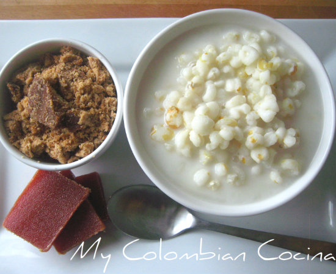

Mazamorra

Description
Some departmens here in Colombia have it as dessert. It is one of my favourite traditional dishes. It's basically made with cooked corn, and milk.
Ingredients
Most of the ingredients are quite easy to get. You can replace panela with sugar, if needed.
- 250 grams of dry white hominy or 1 can white hominy (Pozole).
- 100 grams of panela.
- 2 cups of milk.
- 1 pinch of salt.
- Approximately 4 cups water.
- 100 grams panela, brown sugar or muscovado sugar and guava paste as accompaniment.
Preparation
Mazamorra is quite easy to cook, but you must prepare a few things beforehand. You can serve it cold, or warm.
- Wash and remove impurities that always come in the White hominy package.
- In a bowl, place the corn to soak in two cups of water and let stand for at least 8 hours, or overnight.
- Place corn, water & salt in a saucepan and cook for at least 1 hour over medium heat or until corn is tender.
- Add sugar and cook for 10 minutes more.
- In another pot, boil the milk.
- Then add the corn and simmer for a few minutes more.
Back to main